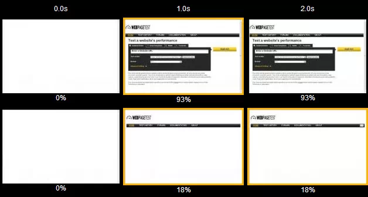
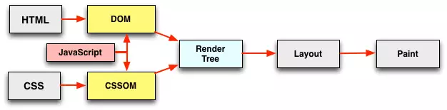
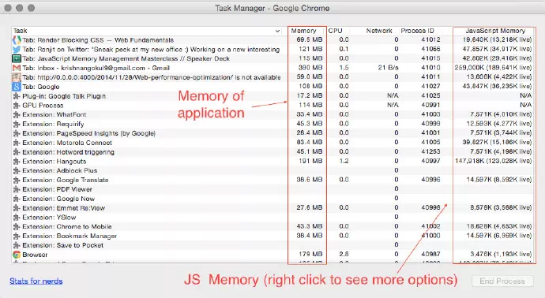
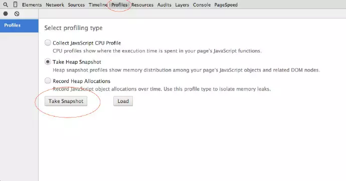

如果你的网站在1000ms内加载完成，那么会有平均一个用户停留下来。2014年，平均网页的大小是1.9MB。网站的核心内容需要在1000ms内呈现出来。如果失败了，用户将永远不会再访问你的网站。通过降低页面加载的时间，很多著名公司的收入和下载量有显著的提升。比如:
网站优化的步骤
下面有几种方法可以提升你的页面性能，让我们来看看
速度指标是指页面的可视部分被呈现在浏览器中的平均速度。表示为毫秒的形式，并且取决于viewport的大小。请看下图（用视频帧的形式展现页面加载时间，以秒为单位）。
速度指标越低越好。
速度指标可以通过Webpagetest 来测试（由Google维护）
长话短说
Webpage test 有很多特性，比如在不同的地方用不同的浏览器跑多个测试。还可以测算其他的数据比如加载时间，dom元素的数量，首字节时间等等…
如果你知道浏览器如何运行，那么你应该知道HTML, CSS, JS是怎么被浏览器解析的以及其中哪个阻塞了页面的渲染。如果你不知道，请看下图。
浏览器渲染的步骤
现在你知道浏览器如何进行解析了，让我们看看是哪一部分阻塞了渲染树的生成。
有人认为CSS阻塞了渲染。在构造CSSOM时，所有的CSS都会被下载，无论它们是否在当前页面中被使用。
为了解决这个渲染阻塞，跟着下面的两个步骤做
将关键CSS内嵌入页面中，即将最重要的（首次加载时可见的部分页面所使用到的）style写入head中的"style"里。移除没用到的CSS。那么我是如何找出没用到的CSS的呢。
##专业小贴士
如果在解析HTML标记时，浏览器遇到了JavaScript，解析会停止。只有在该脚本执行完毕后，HTML渲染才会继续进行。所以这阻塞了页面的渲染。
为了解决它
在标签中使用 async或defer特性。
内存泄漏和页面臃肿 是前端开发者所要面对的问题之一。让我们来看看如何发现并解决内存泄漏。
在JavaScript中寻找内存泄漏
使用Chrome Task Manager（任务管理器）去检测app所使用的内存以及js内存（总体内存+实时内存）。如果你的内存一直随着你的每次操作而提高，那么你可以怀疑有内存泄漏了。
下面是Chrome Task Manager的截图。
Chrome DevTools分析
使用 Heap Profiler 去查看内存泄漏。打开Chrome devTools 然后点击profiles 标签，接着选中 take heap snapshot。
Heap Profiler有四个快照视图(snapshot view)
DOM泄漏
对DOM元素的引用会导致DOM泄漏并且阻碍自动垃圾回收（GC）的进行。
来看一个例子
<div>
<div id="container">
<h1 id="heading">I am just a heading nothing much </h1>
</div>
</div>
var parentEle = document.getElementById('container'); //get parent ele reference 得到父元素的引用
var headingEle = document.getElementById('heading'); //get child ele reference 得到子元素的引用
parentEle.remove(); //removes parent element from DOM 从DOM中移除父元素
//but its child ref still exist, So parentEle won't collect GC'd and causes DOM Leak
//但是它的子元素引用仍然存在，所以parentEle不会被GC回收，因此导致了DOM泄漏。将它的引用设置为null即可修复DOM泄漏。
headingEle = null; //Now parentEle will be GC'd